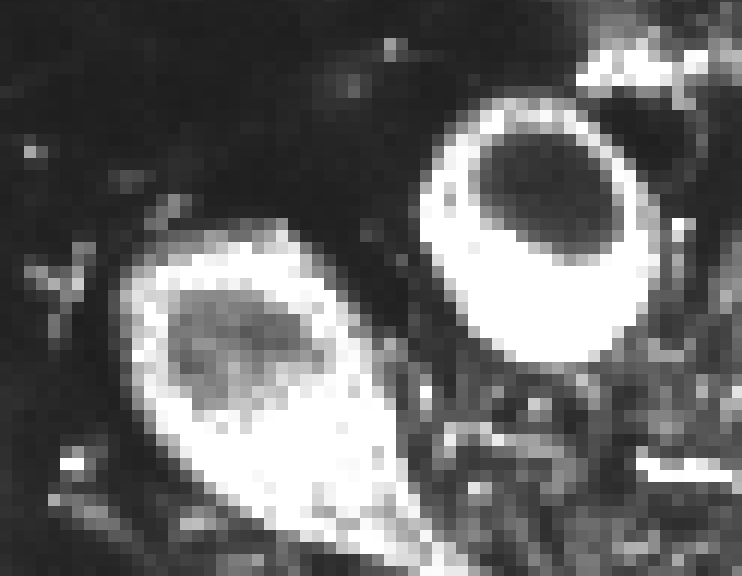
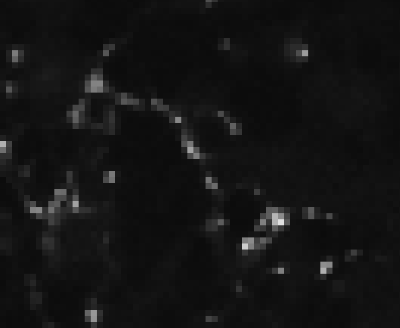
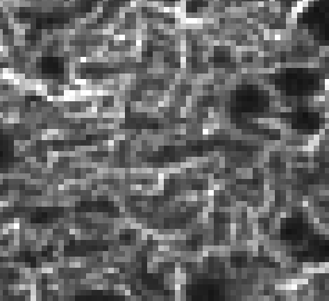

Segmentation and Pixel Classification#
Lab authors: Damian Dalle Nogare and Florian Jug .
This file last updated 2026-04-12.
Segmentation#
Learning Objectives#
Train a pixel classifier to segment images
Learn to use ilastik 16
Experiment with how features and data affect performance
Lab Data in this folder (Lab4)
Important
Remember to unzip the data folder after downloading.
Training a Random Forest Pixel Classifier in ilastik#
Today we will be following along with the excellent ilastik pixel classifier tutorial. Read the guide and use the data provided to test the tool. There are some extra tips down below in this lab book so read ahead. Let us know if you hit a snag!
You can use the data in the Pixel_Classifier/ folder in the lab data. Load both the ‘Train’ images (8 in total) and the ‘Test’ image.
Question
There are both train and a test images. Why is that?
Start training the pixel classifier using ONLY the Train images. Why don’t we use the Test image?
Tip
Moving between images You can change change the view to a different image using the “Current view” dropdown menu.
Try to segment the images by providing training examples for four classes:
Cell bodies:

Synapses:

Granule cell layer:

…and “Other stuff”
{kind=link}
{kind=link}
{kind=link}
Tip
You can change the contrast of your reference image by right clicking ‘raw input’ in the layer list on the lower-left of the screen and choosing ‘Adjust Thresholds’
Can you unambiguously define/draw labels for each of the classes?
If not, would that be a problem? Why or why not?
Pay attention to how the segmentation changes as you add training data. Can you understand why it changes as it does? If not ask!
We learned about this in the lecture - what exactly is this “random forest pixel classifier” doing behind the scenes? If it’s not clear, ask!
Using what you learned about filtering, what can you say about the features we might need for this segmentation task? What are the minimal set that might do? Try that out. If your segmentation needs improvement, what features might you need to add?
When you think you’re done with training, try the model on the test image. How does it perform? What does this tell you about your data, the model, and how you trained it?
Start a new pixel classification project with the same data so you can play around with how the training data affects the resulting model and classification.
What happens if you give the model a ton of examples of one class and very few examples of the others? Why is that?
What happens if you only annotate the brightest cell bodies you can find? Why?
To export your pixel predictions, got to the Prediction Export tab, then Choose Export Image Settings and change the format of the output file to
.tif.Now run your final classifier on the ‘Test’ data (go back to ‘Input Data’ and add it if you haven’t done it before) and export the resulting predictions by clicking on
Exportnext to the name of the Test image .
Class Challenge! - Laziest ‘Good Enough’ Classification (Optional)
Let’s make this (even more) interesting! Try to come up with a ‘good enough’ classifier with as few total annotations as possible. What strategy/reasoning did you use to get there? Compare your results with your labmates and see who manages to win the coveted “Laziest ‘Good Enough’ Classification” Crown :crown: this year!
If you want to submit your classification model for the competition, save your project as YOUR_NAME_2026.ilp and upload it together with an example of your classification to this Google Drive folder.
Cell Classification#
Learning Objectives#
Segment cells
Extract features from cells
Feature-based cell classification
Lab Data in this folder (under Cell_Classifier)
Segment Nuclei for Feature Extraction#
Start a new project in ilastik using the workflow “Pixel Classification + Object Classification”
Use the file in the Cell_Classifier/ folder. The first step will be to train a pixel classifier to segment the nuclei, just like you did in the previous exercise.
Why do we need to segment the cells before we classify them? Are there other approaches that might let us classify cells without segmenting them? What are the pros and cons (ask us to discuss if it’s not clear!)
Once you have a good pixel classifier, you can move on to the thresholding step to convert your probabilities into a mask.
Classifying Mitotic and Interphase Cells#
Now, you can follow this tutorial, starting at the “From segmentation to objects” step.
Can you find a minimal set of features that will classify these cells into dividing and non-dividing? Does adding more features help? Is there any reason we might not want to add all the features?
If you only label cells in the first few frames of the time-series, are your classifications accurate at the end? What does this tell you about your model? Do you think the model would work well on a different image time series? If not, what might improve its performance on new data?
Tip
Did you know that there are ilastik image reading and model running plugins for both Fiji and CellProfiler? They can be helpful for complex workflows.
Once you’ve trained an ilastik classifier, you can also export the images in ilastik’s batch processor for your records and/or to interface with downstream programs. See this tutorial for an example of an ilastik-to-CellProfiler workflow.
Bonus Exercises - Play with Labkit (pixel classification in Fiji)#
You find Labkit on an update site called “Labkit”. Ask us if you have trouble installing it. Try it with the same training data and see how it performs! (We will also be using this software in lab 6!)
Take the cho_cells_BBC030 image we used in the first lab. Try to train a classifier to segment just the round cells. Then, try to train a classifier that also segments the large flat cell. Can you get it to segment both in the same class? Why or why not? Try adding a third class for this cell and see if that helps.
Bonus Exercises - Challenging Segmentations#
Pick the hardest image you’ve seen in the course (maybe the neuron images from Lab 2?) and try to segment it using ilastik or labkit pixel classifier. Can you crack it? Can you understand why or why not? A good example to try is the Hela Cells (48-bit RGB) image you can find in Fiji under “File -> Open Samples -> Hela Cells (48 bit RGB)
Bonus Exercises - Breaking it#
Can you find an image segmentation or object classification problem that you can’t solve with ilastik? If you don’t have time to actually try it, can you think about what sort of problem might be unsolvable by any pixel classification approach?